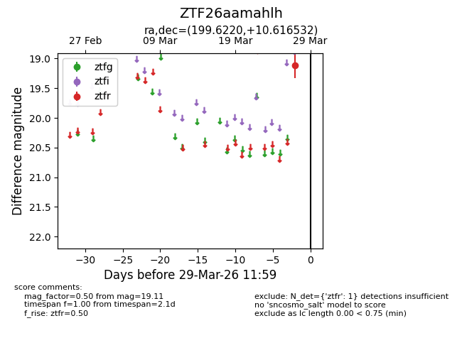
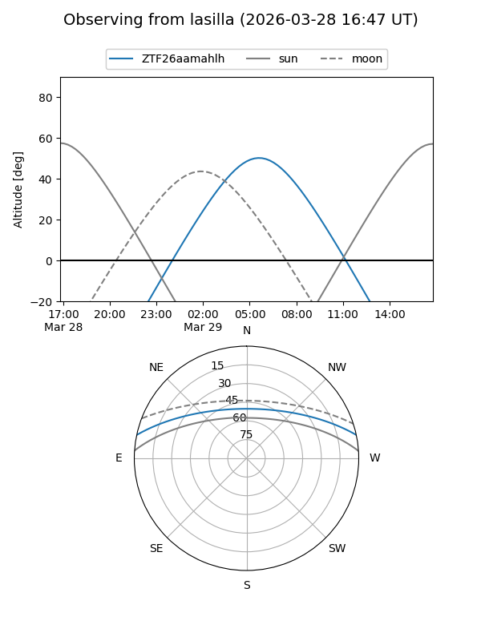
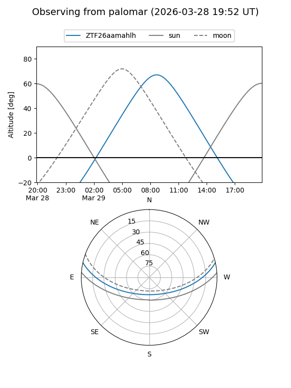

ZTF26aamahlh
Target ZTF26aamahlh at 2026-03-29 12:02
Aliases and brokers:
FINK: link
Lasair: link
ALeRCE: link
alt names
ZTF26aamahlh (ztf,fink_ztf)
Coordinates:
equatorial (ra, dec) = 199.6220,+10.61653
equatorial (HMS+DMS) = 13:18:29.28,+10:36:59.52
galactic (l, b) = (325.3110,+72.30269)
Flags:
Photometry:
last ztfr=19.11
1 ztfr detections
Lightcurve

Visibility


Additional plots